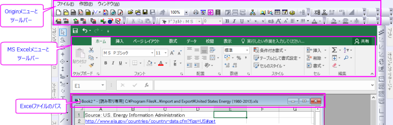

Microsoft Excelとの連携の基本操作
Work-Excel-Basic
Excelデータコネクタのインポートダイアログを使用したExcelデータのインポート
データコネクタはＯriginの新しいデータインポートメカニズムです。OriginLabでは、MSExcelデータのインポートにExcelコネクタを使用することをお勧めします。
Excelコネクタを使用したインポートの詳細については、Excelデータコネクタのインポートダイアログを使用したExcelデータのインポートを参照してください。
XファンクションimpMSExcelのインポートダイアログを使用したExcelデータのインポート
 | Origin 2021b以降、Excelインポートボタン をクリックすると、データコネクタのExcelのインポートオプションダイアログボックスが開きます。以前のように、このボタンでimpExcelダイアログボックスを開くには、LabTalkシステム変数を@TIB = 2に設定します。システム変数の値を変更する方法については、このFAQを参照してください。 をクリックすると、データコネクタのExcelのインポートオプションダイアログボックスが開きます。以前のように、このボタンでimpExcelダイアログボックスを開くには、LabTalkシステム変数を@TIB = 2に設定します。システム変数の値を変更する方法については、このFAQを参照してください。
|
従来のXファンクションimpExcelダイアログを使用してExcelデータをインポートする場合は、XファンクションimpMSExcelのインポートダイアログを使用したExcelデータのインポートを参照してください。
Origin内でのExcelブックとの連携
| Originは、長年にわたり、機能に制限はあるもののOriginワークスペース内でMSExcelのOLEインスタンスをサポートしてきました。時間の経過とともに、連携の問題に関する報告が増加したため、Origin 2021b以降、ExcelファイルをOriginで直接開く（ファイル：Excelを開く）、および新しいExcelワークブックをOriginで開く（ファイル：新規作成：Excel）ためのユーザーインターフェイスコントロールを削除することになりました。Excelデータのインポートの際には、上述のExcelデータコネクタの使用をお勧めします。Excel Connectorは高速かつ、Originのグラフ作成および分析機能に完全にアクセスできます。Excelコネクタを使用したくない場合は、LabTalkシステム変数@MOE値を変更することでOLEアクセスを復元できます。
@MOE=0; // 0 (デフォルト), 1 = ファイル：Excelを開くを表示, 2 = ファイル：新規作成：Excelを表示, 3 = 両方表示
システム変数の値を変更する方法については、このFAQを参照してください。
|
このセクションの残りの部分では、ExcelファイルおよびウィンドウへのOriginメニューが復元されていることを前提としています。
ExcelのOLEインスタンスをOrigin内で開いている場合、以下の画像のように、OriginとExcelの両方の標準ツールバーが表示されます。Excelワークブックウィンドウがアクティブな場合、Originのメニューは、ファイル、作図、ウィンドウのみ利用できます。Excelワークブックに保存されているデータは、データ分析と操作するためのOriginワークシートにアクセスできません。

ExcelワークブックウィンドウからOriginワークブックウィンドウに切り替える場合は、Originツールバーにあるツールバースペーサーをご確認ください。このスペーサーで、ExcelウィンドウからOriginのウィンドウに切り替えるときに、ツールバー範囲を動かないようにします。スペーサーの上で右クリックして、ショートカットメニューからツールバースペーサーを非表示を選択します。
Excelワークブックは専用のOrigin子ウィンドウで管理します。Excelワークブックウィンドウは名前を変える、並び替える、保存する、あるいは削除することができます。ひとつのOriginプロジェクト内で複数のExcelワークブックウィンドウを開くこともできます。Originのワークブックと同様にExcelのワークブックウィンドウではテキストや数値データが表示され、Originのグラフウィンドウでグラフが表示されます。
Excel内でのデータは、Origin内のデータに単一方向で接続することができます。Originで開いたExcelからデータをコピーする場合は、Originワークシートの中のデータに、リンクとして貼り付ける選択をすることができます。そして、Excelファイルのデータが変更されると、Originワークシート内のデータも対応してアップデートされます。
Excelワークブックのメニューは、Excelワークブックウィンドウのタイトルバーを右クリックして使用できます。
| 保存
|
ワークブックデータの変更を保存します。ワークブックウィンドウを保存後にこの操作が可能です。Excelブックが読み取り専用の場合、この機能は利用できません。
|
| ワークブックを名前を付けて保存する
|
選択したワークブックを新しい名前を付けて保存します。名前を付けて保存 ダイアログボックスが開きます。
|
| Originの更新
|
グラフウィンドウにグラフのあるワークブックの名前を変更した場合、このショートカットでグラフとその元データの関係を更新します。 コマンドを選ぶと、Excelワークシートの関連付けダイアログボックスが開きます。 このダイアログボックスを使って、データプロットとシート間のリンクを再確立します。
ワークブックウィンドウや、ワークブックデータを含む他のウィンドウがアクティブ化されないことが時々あります。 この場合、ワークブックのデータが空白表示になっていることが考えられます。 ウィンドウをアクティブにして、表示するには、このショートカットメニューを選びます。
|
| ヘルプの目次
|
Originのヘルプファイルを開きます。
|
| プロパティ
|
ワークブックプロパティダイアログボックスが開きます。 このダイアログボックスを使って、ワークブックウィンドウ名を変更したり、プロジェクトを保存する際にワークブックをどのように保存するかを設定します。
このダイアログボックスは、プロットされているデータとそれと結びついているOriginのインデックス番号を含むワークブックシートの一覧も表示します。 インデックス番号は、ワークブックデータを含むデータプロットの名前の一部になります。
|
Excelワークブックとの連携
Excelワークブックウィンドウには他のウィンドウと異なる機能もあります。以下のセクションで、Excelワークブックウィンドウに特徴的な機能について説明します。
Excelのワークブックを開く、作成する、保存する
Excelワークブックは子ウィンドウの中で特別なウィンドウで、プロジェクトの内部オブジェクトとして、あるいは、外部のExcelファイルへのリンクとして保存できます。
プロジェクト内部にExcelワークブックを保存すると、プロジェクト可搬性が高まります。OriginとExcelがインストールされていれば、どのコンピュータからでも、プロジェクトを開くことができ、Excelワークブックデータにフルにアクセスできます。内部のエクセルファイルでは、Excelワークブック上のデータを他のExcelワークブックの数式で処理するようなダイナミックリンクはできません。
一方、Excelワークブックを外部のワークブックファイルとリンクさせて保存すると、Excelファイルに変更を加える度に、Originのワークブックも更新されます。ファイルは、Microsoft Excelのような他のアプリケーションでも利用可能です。
外部のExcelファイルへのリンクを持つOriginプロジェクトを開くとき、Originはプロジェクト内のワークブックを開きます。該当ワークブックのワークシートプロパティダイアログボックスにあるリンクされたファイルのパスで指定された場所にExcelファイルがない場合、ファイル名ダイアログボックスが開き、Excelファイルの場所を聞かれます。この場合、ダイアログ中で正しいパスとファイル名を入力して、OKをクリックするか、もしExcelファイルが利用できなければ、無視する (あるいは、全てを無視する)をクリックします。この場合、Originはプロジェクトを開いて、ソースが利用できないワークブックの領域を保持する枠を表示します。また、これらのワークブックから作図されたデータプロットは、グラフウィンドウに表示されません。
リンクされたファイル名グループにリンクされたExcelファイルのフルパスとファイル名が表示されます。Originでワークブックウィンドウを作成した場合、デフォルトのパスは、オプションダイアログボックスのファイルの格納場所タブで指定されたExcelのパスによって決まります。
Origin内のExcelワークブックを開く、作成する
- ファイル：Excelを開く...を選択して、OriginでExcelのワークブックを開きます。ファイル：新規：Excelを選択して、OriginでExcelのワークブックを開きます。
Originのスタート時に、Excelのワークブックウィンドウをデフォルトの子ウィンドウにする
- Excelワークブックがアクティブな時にウィンドウ：Originオプションメニューを選択する、または、それ以外の子ウィンドウがアクティブな時に環境設定：オプションメニューを選択します。これにより、オプションダイアログが開きます。オープン/クローズタブを開きます。新規プロジェクトの開始ウィンドウのドロップダウンリストからExcelワークブックを選択して、OKを押します。Originのスタートアップオプションとして保存する？プロンプトで、Yesを選択すると、次からのOriginのセッションに、設定を適用するようにします。Noを選択すると現在のOriginのセッションのみに設定を適用するようにします。
Originのプロジェクトを外部Excelファイルにリンクして保存する
- Excelワークブックのタイトルバーの上で右クリックします。ショートカットメニューからプロパティを選択します。ワークシートプロパティダイアログボックスが開きます。『保存方法』グループから『内部』を選択します。OKボタンをクリックしてダイアログを閉じます。上述の操作を実行すると、ファイル：プロジェクトの新規保存 または ファイル：プロジェクトの保存を選択したとき、あるいは、標準ツールバーのプロジェクト保存ボタンをクリックしたときに、OriginはソースExcelファイル（現Excelワークブックが外部Excelファイルからのものの場合）を更新しません。また、元のExcelファイルに変更を加えても、Originプロジェクトに反映されません。
ExcelファイルをOriginプロジェクトの相対パスに保存する
- Originプロジェクトをまだ保存していない場合、またはOriginプロジェクトがExcelファイルの場所と全く異なるところに保存されている場合。Excelブックのタイトルバーの上で右クリックし、プロパティを選択します。ダイアログで、保存時にOPJパスに切り替えボタンをクリックします。次にOPJファイルが保存されたとき、同じフォルダのExcelファイルのコピーが作成されます。
- Excelファイルと同じフォルダまたは、Excelファイルの上のフォルダににOriginプロジェクトを保存した場合、現プロジェクト(OPJ)パスとの相対位置チェックボックスにチェックが有効である必要があります。このような場合、保存時にOPJパスに切り替えボタンはグレーアウトします。この場合、Originプロジェクト保存時にExcelの外部コピーを作成されません。
リンクされた元のExcelファイルを更新する
- Originプロジェクトに外部のExcelファイルへのリンクを含んでいる場合、プロジェクトを保存すると、Originは自動で元のExcelをアップデートします。ただし、オプションダイアログのExcelタブのExcelワークブック保存時の確認ドロップダウンリストから、上書き保存の前に確認か、プロジェクト新規保存の前に確認のどちらかを選択している場合、Excelワークブックの保存ダイアログボックスが、プロジェクト保存オプションの1つを選択した後に開きます。
- リンク元のExcelファイルを更新するには、外部リストボックスから該当するものを選択します。さらに、Excelワークブックでデータをソースファイルに手動で保存する選択して、外部ファイルを好きなときに更新することができます。これを行うには、ワークブックウィンドウのタイトルバーで右クリックして、ショートカットメニューからワークブックの新規保存を選択します。
Excelワークブックの内部を外部に変更する
- 標準ツールバーの新規Excelボタンをクリックし、 Originで新規ワークブックを開いた場合、デフォルトで内部Excelワークブックを作成します。外部ファイルへのリンクに変更するには、タイトルバーの上で右クリックをして、ショートカットメニューからプロパティを選択します。 このメニューコマンドにより｢ワークブックプロパティ｣ダイアログボックスが開きます。 外部を選択して、OKをクリックします。
- または、タイトルバーで右クリックして、ショートカットメニューからワークブックの新規保存を選択します。 このメニューコマンドにより名前を付けて保存ダイアログボックスが開きます。 ファイル名テキストボックスにファイル名を入力して、OKをクリックします。
- 後でプロジェクトを保存する場合には、外部のExcelワークブックファイルへのリンクを保存します。
Excelデータを使って作図する
Excelワークブックのデータを使って、Origin内で作図する方法は、2通りあります。Originで新規にグラフを直接作成する方法と、Excelワークブックデータを既存のOriginグラフウィンドウに追加する方法です。
直接作図する時は、作図データの選択ダイアログで操作します。ここでは、Excelワークブックからデータをインタラクティブに選択でき、列の属性（X、Y、Zなど）を指定して、グラフを作成することができます。1つのレイヤ（デフォルト）、複数の異なるレイヤ、異なるグラフウィンドウで、複数のグラフ作成を行うことができます。Originでは、XY属性のデフォルト割り当てのオプションがあり、直接作図するデータを指定して、グラフタイプを選択することができます。
既存のグラフウィンドウにデータを、最短で追加するには、データを選択して、ドラッグ&ドロップします。作図データの選択ダイアログ、作図のセットアップダイアログ、レイヤの内容ダイアログも使用できます。これらのダイアログは、ブック名、シート名、列のロングネーム、列のショートネームを含む範囲表記を使って、データセット名を表示します。OriginかExcelのワークブックから、簡単に、データセットを特定できるようになっています。
Excelブックのデータセットの命名規則は、Originブックのデータセットの命名規則と同様です。
ExcelWorkbookName_ColumnName@SheetNumber
ExcelWorkbookNameはワークブック名、ColumnNameはシートの列名、SheetNumberは作図されたデータを持つワークブックシートへの割り当て番号です。
プロットデータを含む、それぞれのシートについて@SheetNumber値を変更するには、ワークブックウィンドウのタイトルバーで右クリックして、ショートカットメニューからプロパティを選択します。シートの名前 - Originインデックスリストボックスに、ワークブックシートと各々に対応する@SheetNumberが表示されます。
Note: @SheetNumberの値は、「Excelワークブック」タブの下に表示されているSheetnの数ではありません。最初に作図されたデータのシートのリファレンスに、@1は使用されません。
プロットされているExcelワークブックデータのデータセット名は、プロットされているOriginのワークシートのデータセット名と同じ場所にあります。これらの場所には、データメニューの下にあるデータリストとレイヤの内容ダイアログボックスを含みます。
既存のグラフウィンドウにデータを追加する場合、データはグラフテンプレートのスタイル (例えば、折れ線グラフ、散布図等)を使って表示されます。データプロットスタイルホルダーを使用してカスタムテンプレートを作成した場合、Originは最初に使用可能なスタイルホルダーを使用します。利用可能なスタイルホルダーがない場合には、グラフテンプレートのスタイルを使ってデータプロットが表示されます。
閉じるボタンをクリックするまで、このダイアログボックスを使ってデータをグラフに追加し続けることができます。 しかし、異なるプロット方法でグラフを作成していたり、グラフを作成した後、作図データの選択ダイアログボックスを閉じてしまっている場合には、このプロット法を利用するためにダイアログボックスを手動で開く必要があります。
Note: 各グラフの種類には、決まった属性のデータが必要です(例えば、三点グラフは、X, Y, Zデータが必要)。 グラフの種類毎に決められた属性についての詳細は、グラフの種類というセクションをご覧下さい。
Excelワークブックのデータを使って、プロットを作成する
- 散布図をサンプルとして説明します。作図：シンボル：散布図を選択するか、 2Dグラフギャラリーにある、 散布図ボタンをクリックして、作図データの選択BookNameダイアログを開きます。Excelシート内のセルの範囲か、列を選択して、X ボタンをクリックして、Xのデータを指定します。同様に、Yのデータを選択して、作図ボタンをクリックして、散布図を作成します。さらにZデータを指定すれば、3Dグラフも同様の方法で作成することができます。最初の行が「列のタイトル行」の場合、「データ選択の行」に簡単に含んで、タイトル行に自動で指定して、後で「軸タイトル」として表示できます。行を選択してタイトル行ボタンをクリックし、特定の行を「ラベル行」に指定することも可能です。グラフの種類によって、用意するデータの形式が異なるので、詳細は、この表をご覧ください。
ドラッグ&ドロップで、Excelデータをプロットする
- データをプロットするグラフの種類を指定します。lワークブックをアクティブにして、「ウィンドウ：Originオプション」メニュー、その他のウィンドウがアクティブの場合、「環境設定：オプション」メニューを選びます。 これでオプションダイアログボックスが開きます。グラフタブにある、ドラッグ＆ドロップ時の作図デフォルトの設定を、折れ線、散布図、線+シンボル図から選択するか、現在の設定を選択して、アクティブグラフウィンドウテンプレートのスタイルを使います。
- ドラッグ&ドロップによる方法でデータをプロットします。ワークブックデータを選択します。マウスカーソルがあるときに、選択領域の右端をマウスでポイントします 。マウスボタンを押しながら、選択されたデータをグラフウィンドウまでドラッグします。
- この方法は、中間的なプロットツールであるダイアログボックスを使用しません。そのため、選択されているデータの扱い方の取り決めに従ってプロットされます。1列（または、1つの列内の一部の領域）を選択した場合、その列はデータプロットのY値となります。データは行番号に対して作図されており、2列以上（または、2列以上の領域）を選択した場合、左端の列がX値となります。他の列はすべてY値となります。データはX値に対して作図されており、2列以上（または、2列以上の領域）を選択し、CTRLキーを押したままドラッグすると、すべての列がY値となります。データは行番号に対して作図されており、グラフウィンドウに複数レイヤがある場合、データは、アクティブなグラフレイヤにドロップされます。（単一レイヤグラフにデータをドロップするとは、このグラフとレイヤをアクティブにします。）
- 作成されるグラフの種類は、オプションダイアログボックスのグラフタブにある「ドラッグ＆ドロップ時の作図デフォルト」で決まります。このプロット方法は、プロジェクト内でワークブックがアクティブで、グラフウィンドウが開いていれば常に使用することができます。(グラフウィンドウが最小化または非表示になっている場合は除く)
既存グラフに、Excelデータを追加する
- Excelワークブックウィンドウをアクティブにします。作図データの選択BookNameダイアログで、データを選択し、属性ボタンをクリックしてから、新しくデータの属性を設定します。次に、アクティブウィンドウをグラフウィンドウに戻します。プロットの追加ボタンをクリックして、データプロットをアクティブグラフレイヤに追加します。
- あるいは、作図のセットアップか、レイヤの内容ダイアログを使って、既存グラフウィンドウにデータを追加します。
複数レイヤにExcelデータをプロットする
- メニューからグラフの種類を選択するか、ツールバーからグラフの種類をクリックして、作図データの選択BookNameダイアログを開きます。Xのデータと、Yの複数列データを指定すると、作図先のドロップダウンリストがアクティブになります。それぞれのデータプロットを同じグラフウィンドウ内の異なったレイヤに作図するには、複数のレイヤを選択し、作図ボタンをクリックします。設定を保存ボタンをクリックすると、作図先ドロップダウンリストでの選択が保存され、現行Originセッション中のダイアログボックスが、後で使用できるようになります。
 | プロットしたいデータの列ヘッダをドラッグするか、SHIFTキーを押しながら(連続した)列の範囲をクリックするか、CTRLキーを押しながら非連続の列をクリックして、複数のY列を選択します。希望するセルをクリックとドラッグして、「CTRL」を押しながら追加したいセルをクリックして、列のデータ範囲を選択します。
|
Excelデータを指定せずに、直接プロットする
- Excelワークブックに作図する全てのデータを選択して、グラフのタイプを選択してから、作図データの選択ダイアログを開きます。デフォルトを使うボタンをクリックして、プロンプトウィンドウのはいを押します。ダイアログボックスで毎回作図設定をせずに、選択したグラフ種類の「XY属性のデフォルト割り当て」を使って、作図します。例）2つのワークブック列を選択して、Yエラーバー図を作る場合、Originでは、X値に行インデックス番号、左にY値、右にYエラー値を使います。XとYエラーバーには、最も左の列にX値、2番目の列にY値、3番目の列にXエラー値、最後の列にYエラー値を設定します。
- いくつかの特別なグラフ種類を作成する際に、大変有効です。例えば、XYAMベクトル、XYXYベクトルでは、作図データの選択ダイアログを使って、Xとして2つの列を指定することができません。それぞれのグラフ種類の「XY属性のデフォルト割り当て」については、この表をご覧ください。
- 作図データの選択ダイアログを再度開いて、オプションダイアログボックスのExcelタブXY属性のデフォルト割り当てチェックボックス のチェックを外します。このダイアログは、ワークブックをアクティブにして、メニューからウィンドウ:Originオプションを選択するか、他の子ウィンドウがアクティブな時は環境設定：オプションを選択して開きます。
Excelデータから、3D曲面図を作成する
- Excelワークブックの連続した範囲のデータを選択して、Originの行列を作成することができます。行列を作成するので、ワークブックデータを選択します。メニューバーから、ウィンドウ:行列を作成を選択します。このメニューコマンドにより新しい行列ウィンドウが開き、選択されたデータが行列ウィンドウにコピーされます。これは、3D曲面図を作成するのに使われるZ値の配列を作成する場合に役立ちます。
Excelワークブックとワークシートに名前を付ける
Excelワークブックに名前を付ける方法は、ワークブックプロパティダイアログで編集します。このダイアログは、Excelワークブックウィンドウのタイトルバーで右クリックして、ショートカットメニューから プロパティ...を選択すると表示されます。このダイアログでは、ワークブックのショートネーム、ロングネームを付けるだけでなく、コメントを追加できます。Excelワークブックのデータからデータプロットを作成している場合、Excelワークブックのシート名を変更すると、Originのデータプロットと元になるExcelのワークブックシートとの関連付けが失われます。
ワークブックをプロジェクトの外部に保存している場合、フルパスとファイル名がタイトルバーに表示されます。
Origin内のExcelワークブックの名前を変更する
- Excelワークブックウィンドウのタイトルバーで右クリックして、ショートカットメニューからプロパティを選択します。このメニューコマンドにより｢ワークブックプロパティ｣ダイアログボックスが開きます。ウィンドウタイトルテキストボックスにファイル名を入力して、OKをクリックします。ワークブックをプロジェクトの外部に保存している場合、フルパスとファイル名がタイトルバーに表示されます。
名前を変更したExcelワークブックのデータをOriginのプロットに再リンクする
- これを行うには、ワークブックウィンドウのタイトルバーで右クリックして、ショートカットメニューからOriginの更新を選択します。これによりExcelワークシートの関連付けダイアログボックスが開きます。変更したワークブックのシートを選択して、OKをクリックします。
ExcelのマクロとVisual Basicアプリケーションを実行する
Excelワークブックがアクティブなウィンドウの場合、Excelで提供されているユーザインターフェイスを使用できます。（Originのウィンドウ操作および作図機能はOriginの機能です） つまり、Excelワークブックがアクティブな時、書式メニュー、ツールメニュー、データメニューは、全てExcelメニューです。 ただし、Originの組込みスクリプト言語であるLabTalkを使って、OriginからExcelワークブックデータにアクセスすることができます。
OriginでExcelのマクロを実行する
- OriginはExcelマクロを実行する際excel オブジェクトメソッドを用います。Excelのマクロを適切に動作させるために、excelオブジェクトメソッドを使って、正しい引数を使用しなければなりません。LabTalkでは、5つ以上の引数を使用できません。さらに、Excelマクロを含むワークブックがアクティブウィンドウでなければなりません。マクロを実行するには、コマンドウィンドウに、次のように入力して、ENTERキーを押します。
- excel.run(SheetName.MacroName) または excel.run(ModuleName.MacroName)
- マクロを実行する範囲を選択するには、次のコマンドを実行します。
- Excel.RunRange(SheetName,RangeName,Arg1,Arg2,&ldots;,Arg5)
- ここで SheetName はマクロを含むシートの名前、RangeName はマクロを開始するシート上のセルの名前（例えば、C6など）です。Argn はマクロの引数です。（ただし、5つ以上の引数を指定することはできません。）excelオブジェクトのメソッドを実行した後の戻り値は、マクロからの値となります。
Origin内からVBA(Visual Basic Application)関数を呼び出す
- Visual Basicアプリケーション関数を起動するには、コマンドウィンドウに以下の構文のスクリプトを入力して、ENTERキーを押します。
- Excel.Run(FunctionName,Arg1,Arg2,&ldots;,Arg5)
- ここで、FunctionNameは、Visual Basic applicationの関数で、Argnは関数の正しい引数（5を超えない）です。excel オブジェクト方法を実行した後に返される値は、関数によります。
Excel データを外部でコピーし、Originに貼り付け/リンク貼り付け
Excelで開いたワークブックのデータをコピーし、Originに貼り付け/リンクの貼り付けが可能です。これにより、Originの強力なグラフ作成および分析機能を利用できます。かつ
リンクの貼り付けを選択した場合、ExcelデータとOrigin間にDDEリンクが作成されます。Excelデータの変更は全て、Originワークブックでも動的に変更されます。
DDEリンクを使用してワークシートセルをクリックすると、Excelからのパスがステータスバーに表示されます。貼り付ける内容が範囲(単一のセルではない)の場合、その範囲内のワークシートセルはリンクの同じパスを共有します。
外部相対パスを使用してExcelからコピーする（推奨）
- Originで外部Excelファイルを開きます。プロジェクトファイルを保存します。
- OPJを基準とした外部Excelファイルのパスを設定します。
- Originで開いたExcelファイルからデータをコピーし、リンクをOriginワークブックに貼り付け
- 外部Excelファイルでデータを変更
- Originプロジェクトファイルを再度開く
- Origin内のデータが対応して更新
完全な外部パスを使用してExcelからコピーする
- Excelで外部エクセルファイルを開きます。
- Excelファイルからデータをコピーし、Originワークブックにリンクを貼り付け
- Excelでデータを変更
- Origin内データが動的に更新されます。
- Note: 絶対的外部パスからのデータは "パスに依存する"ことに注意してください。Excelファイルが別のフォルダに移動されるか、または関連するOPJが別のコンピュータで開かれるたびに、DDEリンクが壊れていることを知らせるダイアログが常に表示されます。
グレーの背景にDDEリンクを持つセルを表示する
編集：編集モードを選択するか、Ctrl+Alt+Bを押し、編集モードを開きます。DDEリンクのあるワークシートセルがグレーの背景に表示されます。
Notes:
- Excelの外部Excelファイルからデータ/テキストをコピーし、それを直接Originグラフに貼り付ける（貼り付けメニューやCtrl+Vを使う）と、Excelオブジェクトの代わりにテキストとして貼り付けられます。Excelファイルとして貼り付けたい場合、リンクの貼り付けを選択します。
- @DDESとDDELというシステム変数を使用して、ファイルの場所が変更されたことを通知するDDE関連のメッセージを無効にすることができます。
- システム変数 @DDENを使ってDDEリンクの開始ダイアログを強制的に開けます。詳細はこのFAQを参照してください。
- Excelから「True」と「False」をコピーしてOrigin上にペーストすると、1と0の数値で表されます。
|
FAQ
関連項目